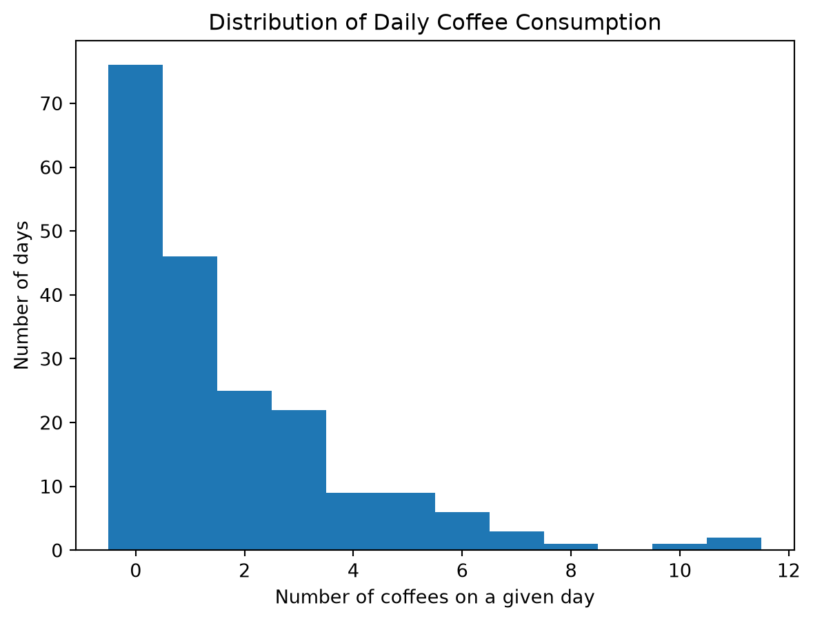
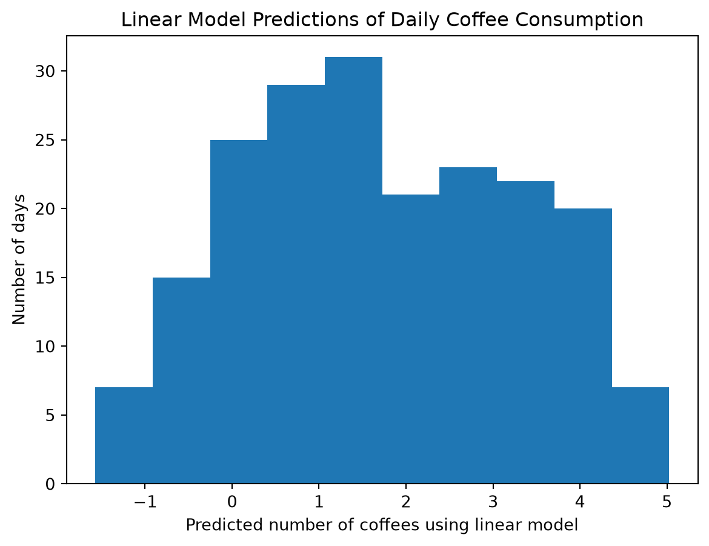
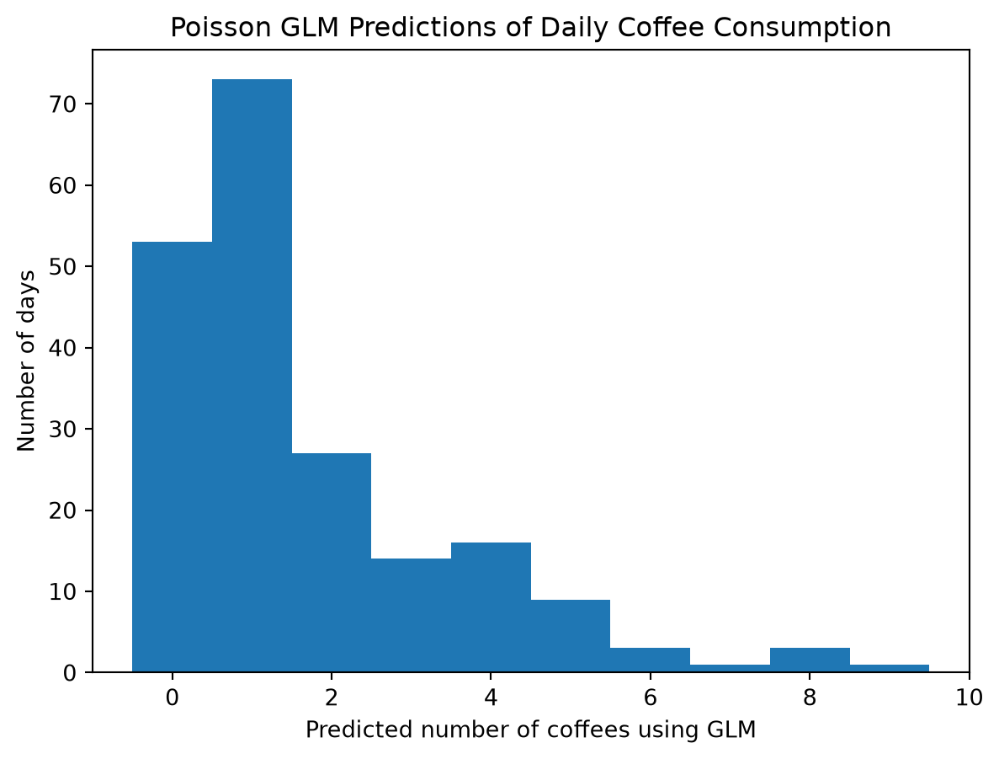
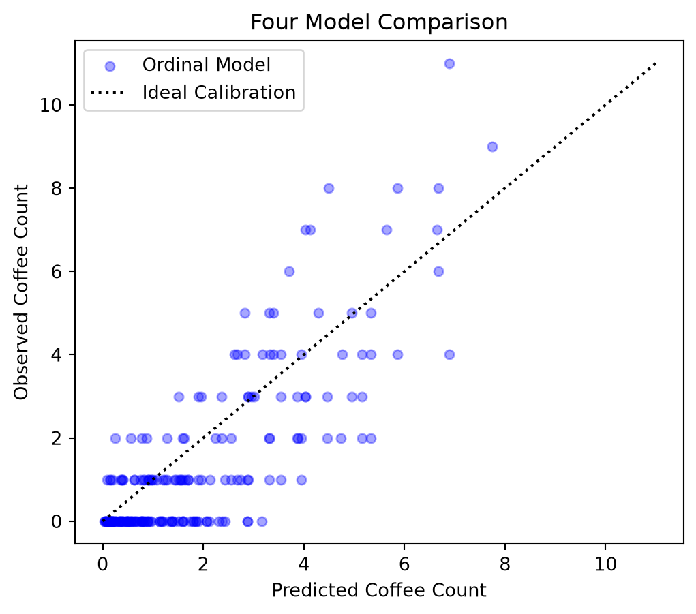
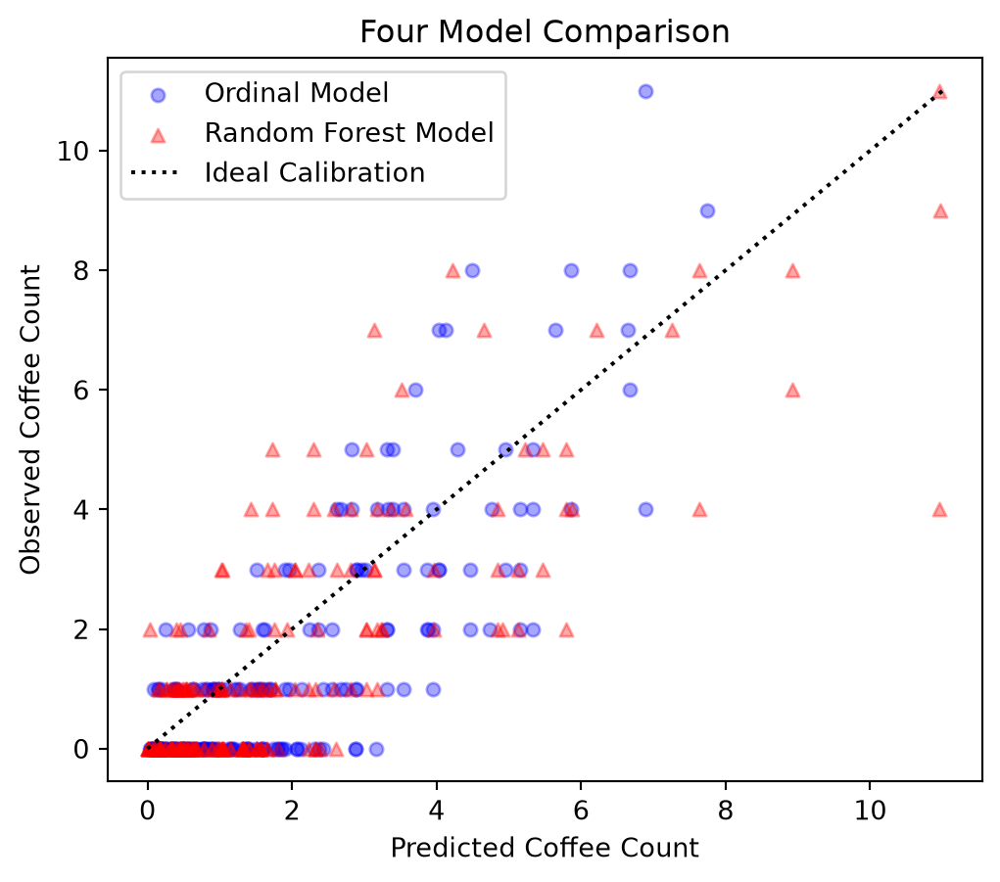
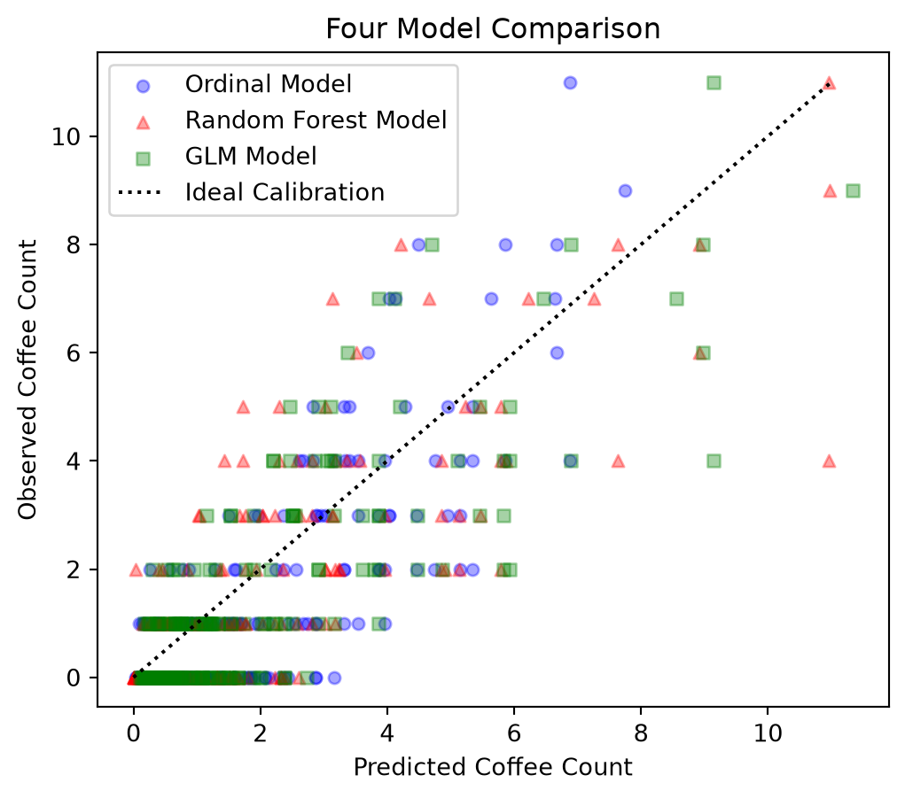
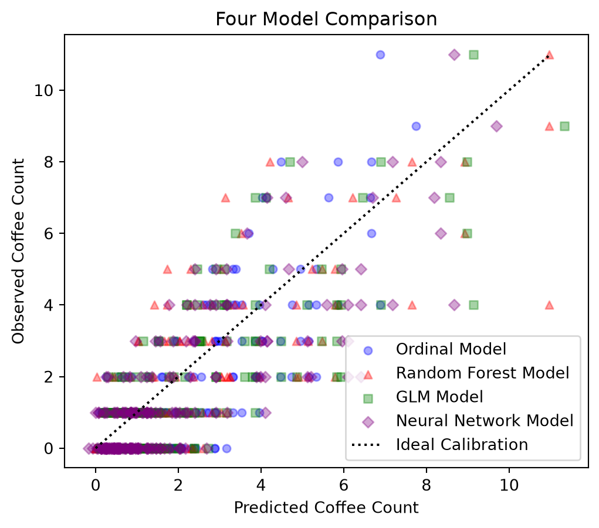

import numpy as np
# created simulated data
X_stress = np.random.randint(1, 11, 200)
X_sleep = np.random.randint(1, 11, 200)
X_work = np.random.binomial(1, 0.5, 200)
# assume Poisson distribution for coffees consumed
lam = np.exp(0.5 + 0.2 * X_stress - 0.3 * X_sleep + 0.2 * X_work) # equating Poisson link function = linear model and then solving for lambda
Y_coffee = np.random.poisson(lam)5 Models
5.1 Generalized Linear Model
5.1.1 Motivating Ideas
The Generalized Linear Model (GLM) represents a class of models that Nelder and Wedderburn set to unify in their 1972 paper. Prior to the Nelder and Wedderburn (1972) paper, models for normal, binomial, poisson, and gamma distributed responses were treated as separate statistical techniques. However, Nelder and Wedderburn noted that these model types shared a common structure and developed a procedure for unifying the models based on maximum likelihood estimation.
The framework is based on assuming a probability distribution of the response of the dataset. Nelder and Wedderburn then proposed using an appropriate link function to transform the expected response onto a scale where a linear combination of features and coefficients can model it. The link function concept made it possible to use a linear model to develop predictions for datasets with responses with different probability distributions.
The GLM framework offers several benefits over ordinary linear regression models when the response is not normally distributed. The link function ensures that model predictions remain within a valid range, such as positive values for counts in a Poisson distribution or probabilities between 0 and 1 in a Binomial distribution. It also allows a familiar linear model to be used to model expected response. The coefficients of this linear model can often be more easily interpreted than those of other models.
A brief history of the GLM framework based on the Nelder and Wedderburn (1972) paper is shown below:
- 1952 — Finney: Developed well-known method for using maximum likelihood estimation for probit analysis. This method was used to unify the class of generalized linear models.
- 1966 — Nelder: Demonstrated how inverse polynomials could be calculated using the first approximation of the GLM framework.
- 1968 — Nelder: Extension of the systematic component of the GLM framework, but used a transformation to produce normal errors. A different transformation was used to produce linearity.
- 1972 — Nelder & Wedderburn: Unified these previously separate approaches into the generalized linear model framework, combining a random component from the exponential family, a linear systematic component, and a link function, with a common maximum-likelihood fitting procedure.
5.1.2 Mathematics
The general GLM framework includes two components: random and systematic. The random component describes the inherent variation in the response (\(Y_i\)). The systematic component describes the predictable part of the response based on a combination of the features (\(\eta_i\)). These two components can be written mathematically as follows.
Assume a dataset with features \(X\), targets \(Y\), and mean \(\mu\). For observation i, the conditional mean of the response is: \[ E[Y_i \mid X_i] = \mu_i \]
The random component specifies a probability distribution for the response, describing inherent variation in \(Y_i\) conditional on the features.
\[ Y_i \mid X_i \sim \text{Exponential Family}(\mu_i, \phi) \]
In the above equation, \(\phi\) controls the amount of variation in the response distribution.
The systematic component can be written with the following equation. \[ \eta_i = \beta_0 + \beta_1 X_{i1} + \cdots + \beta_p X_{ip} \]
where:
- \(\eta_i\) is the systematic component for observation \(i\).
- \(\beta_0\) is the intercept.
- \(\beta_j\) is the coefficient associated with feature \(j\).
- \(X_{ij}\) is the value of feature \(j\) for observation \(i\).
- \(p\) is the total number of features.
The random and systematic components are connected through a link function. The link function allows the linear predictor to be related to the conditional mean of the response, even when the response has different probability distributions. In the equation below, \(g(\mu_i)\) is this link function that transforms the conditional mean of the response, \(\mu_i\), to the scale of the linear predictor, \(\eta_i\).
\[ g(\mu_i) = g\left(E[Y_i \mid X_i]\right) = \eta_i = \beta_0 + \beta_1X_{i1} + \cdots + \beta_pX_{ip} \]
Link functions for the four different probability distributions are given in the table below.
| Distribution | Response | Regression Model | Link Function | |
|---|---|---|---|---|
| Normal | Positive or negative, continuous, approximately symmetric | Linear | \(g(\mu_i) = \mu_i\) | |
| Binomial | Binary outcome or proportion | Logistic | \(g(\mu_i) = \log\left(\frac{\mu_i}{1-\mu_i}\right)\) | |
| Poisson | Positive integer counts | Poisson | \(g(\mu_i) = \log(\mu_i)\) | |
| Gamma | Positive, continuous, right-skewed | Gamma | \(g(\mu_i) = 1/\mu_i\) or \(g(\mu_i) = \log(\mu_i)\) | |
5.1.3 Coding Demonstration & Visualizations of Prediction Relationship
An example will be used to demonstrate how GLMs can be implemented. A simulated dataset was used for this exercise and was taken from Interpretable Machine Learning by Christoph Molar. The simulated dataset consisted of the following cofee intake daily records for 200 days:
- Current stress level on a scale from 1-10 - drawn uniformly
- Quality of last night’s sleep on a scale from 1-10 - drawn uniformly
- Whether or not it was a work day - yes/no based on 50/50 chance
- Number of coffee cups consumed - drawn from Poisson distribution, modeling \(\lambda\) (expected value of Poisson distribution) as a function of the rest of the features
A histogram was created to see the distribution of number of coffees consumed.
import matplotlib.pyplot as plt
plt.hist(Y_coffee, bins=np.arange(Y_coffee.max() + 2) - 0.5)
plt.xlabel("Number of coffees on a given day")
plt.ylabel("Number of days")
plt.title("Distribution of Daily Coffee Consumption")
plt.show()
The response is a discrete count variable and, as shown by the histogram, is clearly not normally distributed. This makes this dataset a potential candidate for GLM.
In order to demonstrate the effectiveness of the GLM, a linear model was first used to predict the number of coffees consumed, assuming a normal distribution.
# combine features
X = np.column_stack((X_stress, X_sleep, X_work))
# develop linear model
import statsmodels.api as sm
# add intercept to feature matrix
X = sm.add_constant(X)
# create and fit model
linear_model = sm.OLS(Y_coffee, X)
linear_results = linear_model.fit()
# make predictions using linear model
Y_coffee_pred_linear = linear_results.predict(X)A histogram was created to show the results of the linear model predictions.
plt.hist(Y_coffee_pred_linear, bins=10)
plt.xlabel("Predicted number of coffees using linear model")
plt.ylabel("Number of days")
plt.title("Linear Model Predictions of Daily Coffee Consumption")
plt.show()
The histogram shows that the linear model predicted a negative number of coffees on some days, which does not make sense.
Next, the GLM approach was used to develop a model for predicting the number of daily coffees consumed. It was assumed that the \(\beta\) factors were unknown in the Poisson expression for the number of coffees consumed on a given day. Therefore, they needed to be calculated.
# combine features and add intercept
X = np.column_stack((X_stress, X_sleep, X_work))
X = sm.add_constant(X)
# use GLM approach to create and fit model using Poisson distribution
glm_model = sm.GLM(Y_coffee, X, family=sm.families.Poisson())
glm_results = glm_model.fit()
# use GLM for predictions
Y_coffee_pred_glm = glm_results.predict(X)
# see calculated beta factors used to create Y_coffee
print(glm_results.params) [ 0.65766361 0.1719865 -0.3043036 0.26337676]The calculated \(\beta\) factors are nearly the same as the ones used in the Poisson expression to develop Y_coffee.
Next, a histogram was created to show the results of the GLM approach using the Poisson distribution.
plt.hist(Y_coffee_pred_glm, bins=np.arange(Y_coffee_pred_glm.max() + 2) - 0.5)
plt.xlabel("Predicted number of coffees using GLM")
plt.ylabel("Number of days")
plt.title("Poisson GLM Predictions of Daily Coffee Consumption")
plt.show()
The histogram of the GLM prediction results appears much more simialar to the overall shape of the original coffee consumption dataset. The predictions also fall within a reasonable range, showing no negative estimates for the number of coffees consumed.
5.1.4 Special Considerations
GLMs provide a framework for modeling responses that are not normally distributed. However, when using a GLM, the selected probability distribution and resulting link function must be appropriate for the dataset. Other types of distributions falling outside of the exponential family may not be appropriate for the GLM.
5.2 Computation
5.2.1 Computation Plan
For this computation, all four models discussed were evaluated on a single dataset to compare and contrast the resulting prediction rules and out-of-sample performance. The four models evaluated included ordinal regression, random forest, neural network, and generalized linear model. The dataset used for this evaluation is the coffee intake dataset used in the GLM demonstration.
The dataset was first split into training and testing datasets using an 80/20 split. The training dataset was used to develop the four models, and the testing dataset was used to evaluate the out-of-sample performance of the models. A calibration plot was created to visualize the relative performance between the four models. Root mean square error (RMSE) was also used to quantify the relative performance of the models.
5.2.2 Computation Execution
5.2.2.1 Data Setup
First, the coffee dataset was replicated from above, but with N=1000.
import numpy as np
# created simulated data
X_stress = np.random.randint(1, 11, 1000)
X_sleep = np.random.randint(1, 11, 1000)
X_work = np.random.binomial(1, 0.5, 1000)
X = np.column_stack((X_stress, X_sleep, X_work))
# assume Poisson distribution for coffees consumed
lam = np.exp(0.5 + 0.2 * X_stress - 0.3 * X_sleep + 0.2 * X_work) # equating Poisson link function = linear model and then solving for lambda
Y = np.random.poisson(lam)Next, the dataset was split into training and testing datasets.
from sklearn.model_selection import train_test_split
X_train, X_test, Y_train, Y_test = train_test_split(X, Y, test_size=0.2, random_state=42)5.2.2.2 Ordinal Model
The ordinal model was then trained and fitted to the training dataset. In order to use the ordinal model, the response variable was converted from numerical to categorical data type since the ordinal model is designed to be used with categorical data. The logit function was used to create the ordinal model. \[ \operatorname{logit}(p_k) = \log\left(\frac{p_k}{1-p_k}\right) = \alpha_k - \beta \]
import numpy as np
import pandas as pd
from statsmodels.miscmodels.ordinal_model import OrderedModel
# convert Y_train to categorical data type so it works with Ordinal model
Y_train_cat = pd.Categorical(Y_train, ordered=True)
# create ordinal model using logit function
model_ordinal = OrderedModel(Y_train_cat, X_train, distr='logit')
# fit the model to training data
# bfgs = Broyden–Fletcher–Goldfarb–Shanno. optimization method.
results_ordinal = model_ordinal.fit(method='bfgs')Optimization terminated successfully.
Current function value: 1.416532
Iterations: 88
Function evaluations: 89
Gradient evaluations: 89Next, the ordinal model was used to make predictions on the testing dataset. An output table was created to show the predicted probabilities for each coffee count category for the first observation. Similar predicted probabilities were generated for each subsequent observation.This type of output is unique to the ordinal model compared to the other three model types evaluated in this computation.
# predictions
Y_pred_ordinal = results_ordinal.predict(X_test)
# create table to show predicted probability for each coffee count category for first observation
ordinal_table = pd.DataFrame({
"Coffee Count Category": Y_train_cat.categories,
"Predicted Probability": Y_pred_ordinal[0]
})
# formatting percentages and hiding index for readability
ordinal_table.style.format({"Predicted Probability": "{:.2%}"}).hide(axis="index")| Coffee Count Category | Predicted Probability |
|---|---|
| 0 | 9.60% |
| 1 | 29.89% |
| 2 | 21.13% |
| 3 | 18.36% |
| 4 | 10.91% |
| 5 | 4.52% |
| 6 | 2.12% |
| 7 | 0.86% |
| 8 | 0.92% |
| 9 | 0.76% |
| 10 | 0.20% |
| 11 | 0.30% |
| 12 | 0.06% |
| 13 | 0.11% |
| 14 | 0.16% |
| 17 | 0.05% |
| 18 | 0.05% |
In order to plot the results of the ordinal model on a calibration curve, the predicted probabilities were converted into a single predicted coffee count. This was done using the following equation, where \(y\) represents each coffee count. \[ \hat{Y} = E[Y \mid X] = \sum_y yP(Y=y \mid X) \]
Code for this conversion is shown below.
import numpy as np
# use dot product for this
# Y_pred_ordinal is 200x13 array. 200 rows = observations, 13 columns = predicted probabilities for each coffee count category
# Y_train_cat.categories is a 13x1 array of coffee count categories.
# result will be 200x1 array of predicted coffee counts for each observation in testing dataset
Y_pred_ordinal_calib = np.dot(Y_pred_ordinal, Y_train_cat.categories)A calibration curve was then created to show the performance of the ordinal model on the testing dataset.
import matplotlib.pyplot as plt
plt.figure(figsize=(6, 5))
# plot ordinal model results
plt.scatter(Y_pred_ordinal_calib, Y_test, marker='o', color ='blue', alpha=0.35, s=25, label='Ordinal Model')
# 45-degree ideal calibration line
plt.plot([Y_test.min(), Y_test.max()], [Y_test.min(), Y_test.max()], linestyle=':', color='black', label='Ideal Calibration')
plt.xlabel("Predicted Coffee Count")
plt.ylabel("Observed Coffee Count")
plt.title("Four Model Comparison")
plt.legend()
plt.show()
5.2.2.3 Random Forest Model
The random forest model was then evaluated on the same dataset. The random forest model was initialized with 500 trees and a maximum depth of 10. It was then fit to the training dataset and predictions were generated.
from sklearn.ensemble import RandomForestRegressor
from sklearn.datasets import make_regression
# initialize random forest model with 500 trees and max depth of 10
model_rf = RandomForestRegressor(n_estimators=500, max_depth=10, random_state=20)
# fit random forest model to training data
model_rf.fit(X_train, Y_train)
# make predictions using random forest model on testing data
Y_pred_rf = model_rf.predict(X_test)Predictions from the random forest model were then added to the calibration curve.
plt.figure(figsize=(6, 5))
# plot ordinal model results
plt.scatter(Y_pred_ordinal_calib, Y_test, marker='o', color ='blue', alpha=0.35, s=25, label='Ordinal Model')
plt.scatter(Y_pred_rf, Y_test, marker='^', color ='red', alpha=0.35, s=25, label='Random Forest Model')
# 45-degree ideal calibration line
plt.plot([Y_test.min(), Y_test.max()], [Y_test.min(), Y_test.max()], linestyle=':', color='black', label='Ideal Calibration')
plt.xlabel("Predicted Coffee Count")
plt.ylabel("Observed Coffee Count")
plt.title("Four Model Comparison")
plt.legend()
plt.show()
5.2.2.4 Generalized Linear Model
The GLM followed the same workflow as described above in the explanation of the model. Intercepts were added to the X test and train datasets since they are needed for the GLM.
import statsmodels.api as sm
# add intercept column to X train and test datasets
X_train_glm = sm.add_constant(X_train)
X_test_glm = sm.add_constant(X_test)
# use GLM approach to create and fit model using Poisson distribution
model_glm = sm.GLM(Y_train, X_train_glm, family=sm.families.Poisson())
model_glm_results = model_glm.fit()
# use GLM for predictions
Y_pred_glm = model_glm_results.predict(X_test_glm)Results were then plotted on the same calibration curve for comparison.
plt.figure(figsize=(6, 5))
# plot ordinal model results
plt.scatter(Y_pred_ordinal_calib, Y_test, marker='o', color ='blue', alpha=0.35, s=25, label='Ordinal Model')
plt.scatter(Y_pred_rf, Y_test, marker='^', color ='red', alpha=0.35, s=25, label='Random Forest Model')
plt.scatter(Y_pred_glm, Y_test, marker='s', color ='green', alpha=0.35, s=25, label='GLM Model')
# 45-degree ideal calibration line
plt.plot([Y_test.min(), Y_test.max()], [Y_test.min(), Y_test.max()], linestyle=':', color='black', label='Ideal Calibration')
plt.xlabel("Predicted Coffee Count")
plt.ylabel("Observed Coffee Count")
plt.title("Four Model Comparison")
plt.legend()
plt.show()
5.2.2.5 Neural Network
Finally, the neural network model was initialized and trained on the training dataset. The sklearn Multi-Layer Perceptron neural network library was used for the model. Several parameters for this model were selected, including using a hidden layer with 10 neurons, a relu activation function, adam optimizer for weight optimization, and a maximum of 1000 epochs. The features were scaled using the StandardScaler library, since neural networks can perform better when features are scaled. Predictions were then calculated for the testing dataset using the neural network model.
from sklearn.preprocessing import StandardScaler
from sklearn.neural_network import MLPRegressor
from sklearn.pipeline import make_pipeline
# initialize the multi-layer perceptron regressor neural network model
model_nn = MLPRegressor(
hidden_layer_sizes=(10,), # hidden layer of 10 neurons
activation='relu', # rectified linear unit (relu) activation function for hidden layers
solver='adam', # adaptive moment estimation (adam) optimizer used for weight optimization
max_iter=1000, # max number of training epochs
random_state=25
)
# fit model using scaled feature data
model_nn_scaled = make_pipeline(StandardScaler(), model_nn)
model_nn_scaled.fit(X_train, Y_train)
# make predictions using neural net model
Y_pred_nn = model_nn_scaled.predict(X_test)C:\Users\provi\AppData\Local\Python\pythoncore-3.14-64\Lib\site-packages\sklearn\neural_network\_multilayer_perceptron.py:785: ConvergenceWarning: Stochastic Optimizer: Maximum iterations (1000) reached and the optimization hasn't converged yet.
warnings.warn(Finally, the results were included on the calibration plot to see how they compared to the other model types.
plt.figure(figsize=(6, 5))
# plot ordinal model results
plt.scatter(Y_pred_ordinal_calib, Y_test, marker='o', color ='blue', alpha=0.35, s=25, label='Ordinal Model')
plt.scatter(Y_pred_rf, Y_test, marker='^', color ='red', alpha=0.35, s=25, label='Random Forest Model')
plt.scatter(Y_pred_glm, Y_test, marker='s', color ='green', alpha=0.35, s=25, label='GLM Model')
plt.scatter(Y_pred_nn, Y_test, marker='D', color ='purple', alpha=0.35, s=25, label='Neural Network Model')
# 45-degree ideal calibration line
plt.plot([Y_test.min(), Y_test.max()], [Y_test.min(), Y_test.max()], linestyle=':', color='black', label='Ideal Calibration')
plt.xlabel("Predicted Coffee Count")
plt.ylabel("Observed Coffee Count")
plt.title("Four Model Comparison")
plt.legend()
plt.show()
Some observations from the plot include the following:
- The models appeared to perform similarly.
- Predictions for all models are best for observed coffee counts between 1-3 coffees.
Finally, the models were compared using the root mean square error (RMSE) method to evaluate relative performance. The RMSE equation is shown below. \[ RMSE = \sqrt{\frac{1}{n}\sum_{i=1}^{n}(Y_i-\hat{Y}_i)^2} \] where: \(n\) = number of observations \(Y_i\) = observed value \(\hat{Y}_i\) = predicted value
from sklearn.metrics import root_mean_squared_error
# calculate RMSE for each model
rmse_ordinal = root_mean_squared_error(Y_test, Y_pred_ordinal_calib)
rmse_rf = root_mean_squared_error(Y_test, Y_pred_rf)
rmse_glm = root_mean_squared_error(Y_test, Y_pred_glm)
rmse_nn = root_mean_squared_error(Y_test, Y_pred_nn)
# create table for displaying results
rmse_table = pd.DataFrame({"Model": ["Ordinal", "Random Forest", "GLM", "Neural Network"],
"RMSE": [rmse_ordinal, rmse_rf, rmse_glm, rmse_nn]})
rmse_table.style.format({"RMSE": "{:.3f}"}).hide(axis="index")| Model | RMSE |
|---|---|
| Ordinal | 1.303 |
| Random Forest | 1.378 |
| GLM | 1.297 |
| Neural Network | 1.317 |
The results show that the models all performed similarly to one another.